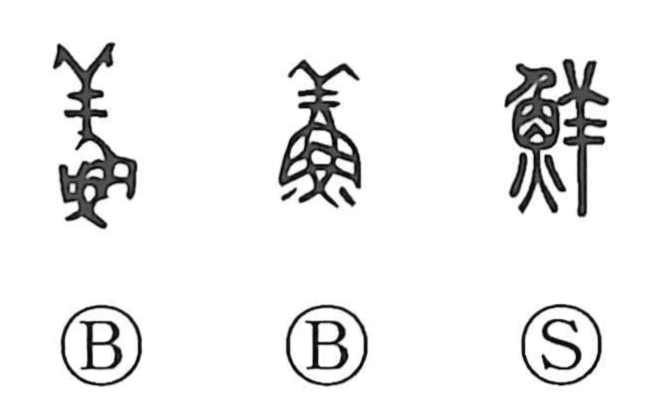

鮮

Kun: azayaka | On: sen
fresh ・ new ・ vivid ・ clear ・ scarce
Explanation
鮮 is a phono-semantic character: the fish element 魚 provides the meaning, while 羊 serves as the phonetic, pointing to the sound sen through its association with the graph 羶 (sen), the animal smell of mutton. The character originally evoked the distinctive odors of fish and sheep combined; from this peculiar, immediately recognizable smell it came to signify freshness in meat and fish. The idea then shifted from smell to sight, yielding senses such as vivid, clear, and beautiful. Its use for “few, scarce” in compounds like 鮮少 arises by loan, standing in for other sen-graphs that expressed scantness—whether a meager ladling from a spoon or only a little in the pot.